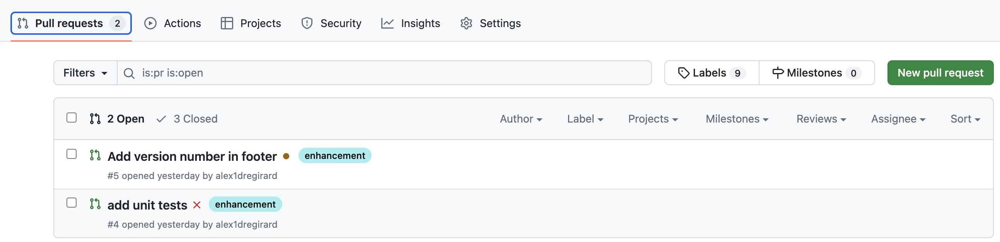
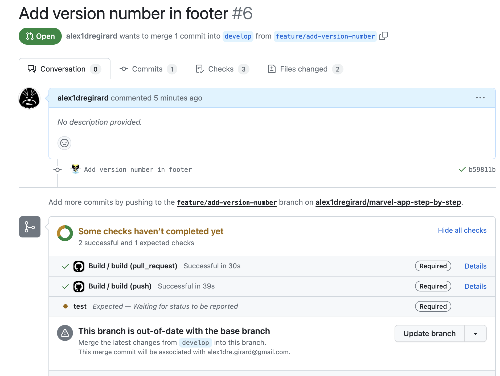
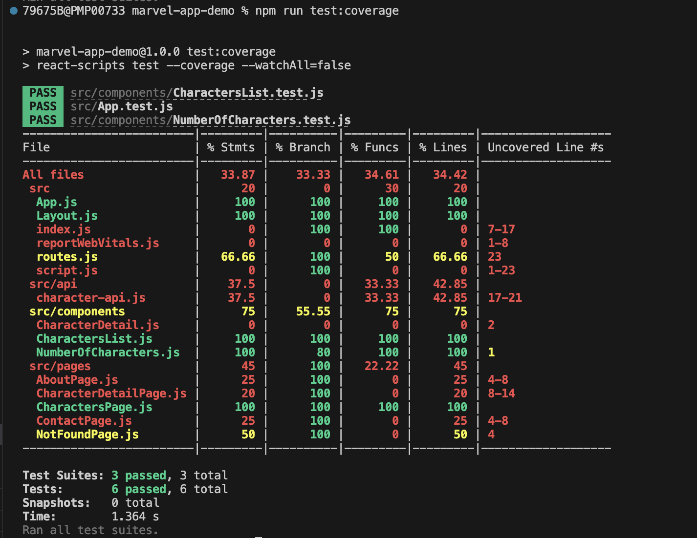

Version 1.1.0
Objectifs
La version 1.1.0 va apporter les modifications suivantes :
- Ajout du numéro de version dans le footer
- Mise en oeuvre des tests unitaires
- Mise en oeuvre du workflow de test unitaire
- Ajout de tests unitaires pour
src/componentssrc/apisrc/pages
- Exclure certains fichiers du rapport de couverture de code
- Suppression du code mort
Mise en oeuvre de 2 développements en parallèle
Nous allons mettre en oeuvre 2 développements en parallèle pour voir comment gérer les mises à jour de code source.
gitGraph
checkout main
commit tag: "v1.0.0"
branch develop
checkout develop
branch feature-add-version-number
checkout feature-add-version-number
commit id:"footer"
checkout develop
branch feature-add-unit-tests
commit id: "workflow"
commit id: "fix-test"
checkout develop
merge feature-add-version-number
checkout feature-add-unit-tests
merge develop
checkout develop
merge feature-add-unit-tests
branch feature-add-unit-tests-components
checkout feature-add-unit-tests-components
commit id: "number"
commit id: "..."
commit id: "...."
commit id: "dead-code"
checkout develop
merge feature-add-unit-tests-components
branch release-1.1.0
checkout release-1.1.0
commit id:"1.1.0.rc1"
commit id:"doc"
commit id:"1.1.0"
checkout main
merge release-1.1.0
commit tag: "v1.1.0"
checkout develop
merge mainAjout du numéro de version dans footer
Nous allons ajouter le numéro de version dans le footer de l'application. Cela permettra de vérifier que la bonne version de l'application est déployée.
Créer la branche feature/add-version-number :
Modifier le fichier src/Layout.js avec le contenu suivant :
import React from 'react';
import { Outlet } from "react-router";
import { NavLink } from "react-router-dom";
import packageJson from '../package.json';
const Layout = () => {
const version = packageJson.version;
return (
<>
<header>
<h1>Marvel App</h1>
<nav>
<NavLink to="/">Home</NavLink> - <NavLink to="/about">About</NavLink> - <NavLink to="/contact">Contact</NavLink>
</nav>
</header>
<main>
<Outlet />
</main>
<footer>
<p>Marvel App - {version}</p>
</footer>
</>
);
};
export default Layout;
Nous utilisons ici la variable version du fichier package.json pour afficher le numéro de version de l'application.
Modifier le fichier package.json pour ajouter la version de l'application :
Commiter les modifications et pusher les modifications sur GitHub :
git add src/Layout.js
git add package.json
git commit -m "Add version number in footer"
git push --set-upstream origin feature/add-version-number
Créer une pull request, sans la valider, sur GitHub pour merger plus tard, la branche feature/add-version-number dans la branche develop.
Mise en oeuvre des tests unitaires
Lors de la création du projet avec create-react-app, un fichier src/App.test.js a été créé. Ce fichier contient un exemple de test unitaire avec la librairie jest. Nous allons utiliser cette librairie pour écrire nos tests unitaires.
Pour lancer les tests unitaires, exécuter la commande suivante :
Cela va lancer jest en mode watch. A chaque modification d'un fichier, jest va relancer les tests unitaires. La consolse s'affiche et permet de lancer les tests unitaires, de les relancer, de les filtrer, etc...
Par exemple pour lancer toutes les suites de tests, il suffit de taper a dans la console.
On constate que le test unitaire de App.js est en erreur. C'est normal, car le composant App a évolué depuis la création du projet. Nous allons donc modifier le test unitaire pour qu'il soit à nouveau valide.
Avant de modifier le code source, nous allons créer la branche feature/add-unit-tests pour travailler sur cette fonctionnalité.
Mise en oeuvre du workflow de test unitaire
Nous allons maintenant mettre en oeuvre un workflow de test unitaire. L'objectif est de lancer les tests unitaires à chaque push, ce qui permettra de vérifier que le code source est toujours valide. Et permettra de rajouter un status check sur github et donc de bloquer les pull requests si les tests unitaires ne sont pas valides.
Créer un fichier .github/workflows/unit-tests.yml avec le contenu suivant :
name: Unit Tests
on:
push:
pull_request:
jobs:
test:
runs-on: ubuntu-latest
steps:
- uses: actions/checkout@v3
- uses: actions/setup-node@v3
with:
node-version: 18
cache: 'npm'
- run: npm ci
- run: npm run test
Commiter et pusher les modifications :
git add .github/workflows/unit-tests.yml
git commit -m "Add unit tests workflow"
git push origin feature/add-unit-tests
Modifier la protection des branches develop et main pour ajouter le status check sur le workflow de test unitaire (nommé test), afin de bloquer les pull requests si les tests unitaires ne sont pas valides. Vérifier que la case Require branches to be up to date before merging est cochée, cela permet de vérifier que la branche de la pull request est bien à jour avec la branche de destination.
Créer une pull request pour merger la branche feature/add-unit-tests dans la branche develop. Le workflow de test unitaire est lancé et la pull request est bloquée, car le test unitaire de App.js est en erreur.
Pull requests
Nous avons 2 pull requests en attente de validation :
feature/add-version-number: Add version number in footerfeature/add-unit-tests: add unit tests
La pull request feature/add-version-number est bloquée (en orange), car nous avons ajouté un status check sur le workflow de test unitaire, mais cette branche ne contient pas le fichier .github/workflows/unit-tests.yml.
La pull request feature/add-unit-tests est bloqué (en rouge), car le test unitaire de App.js est en erreur.

Nous allons fixer le test unitaire de App.js pour que la pull request feature/add-unit-tests soit valide et que nous puissions la merger dans la branche develop.
Correction du test unitaire de App.js
Modifier le fichier src/App.test.js avec le contenu suivant :
import { render, screen } from '@testing-library/react';
import App from './App';
test('renders learn react link', () => {
render(<App />);
const h1Element = screen.getByRole('heading', { level: 1, name: "Marvel App" });
expect(h1Element).toBeInTheDocument();
});
Le test unitaire vérifie que le composant App contient un titre h1 avec le texte Marvel App. Le test unitaire est à nouveau valide. Nous ferons évoluer ce test unitaire par la suite pour le rendre plus pertinent. Cependant ce test unitaire est déjà utile, car il permet de vérifier que le composant App est bien rendu, ce qui veut dire que l'application est bien lancée.
Commiter les modifications et pusher les modifications sur GitHub :
git add src/App.test.js
git commit -m "Fix unit test for App.js"
git push --set-upstream origin feature/add-unit-tests
La pull request feature/add-unit-tests est à nouveau valide, on peut donc merger la pull request.
Mise à jour de la pull request feature/add-version-number
On constate que la pull request feature/add-version-number est toujours bloquée, car elle ne contient toujours pas le fichier .github/workflows/unit-tests.yml, mais nous avons aussi un nouveau message car la branche feature/add-unit-tests n'est pas à jour avec la branche develop.

Nous allons donc mettre à jour la branche feature/add-version-number avec la branche develop, en cliquant sur le bouton Update branch. Il ne devrait pas y avoir de conflit, car nous n'avons pas modifié le même fichier dans les 2 branches. La pull request feature/add-version-number est à nouveau valide, on peut donc merger la pull request.
La branche develop est maintenant à jour avec les 2 pull requests validées. Nous avons donc une branche develop qui contient les 2 fonctionnalités:
- Ajout du numéro de version dans le footer
- Mise en oeuvre des tests unitaires
Nous allons maintenant ajouter des tests unitaires pour les composants de l'application.
Ajout de tests unitaires pour src/components
Nous allons créer une branche feature/add-unit-tests-components pour travailler sur les tests unitaires des composants.
NumberOfCharacters
Lorsque l'on met en oeuvre des test unitaires, on souhaite tester tout les cas possibles. Pour cela, on va utiliser le principe de la partition de l'espace d'entrée. Cela consiste à définir les différentes valeurs possibles pour chaque paramètre d'une fonction. Pour chaque combinaison de valeurs, on va tester le comportement de la fonction.
Dans le cas de NumberOfCharacters, nous avons un seul paramètre, qui est characters. Nous allons donc tester les cas suivants :
charactersestnull, c'est à dire que la fonction est appelée sans paramètrecharactersest videcharacterscontient des éléments
Nous avons donc 3 cas à tester. Nous allons donc devoir créer 3 tests unitaires.
Cependant en regardant le composant, on constate que l'on pourrait avoir un 4ème cas, lorsque characters contient un seul élément, dans ce cas, il faudrait afficher There is 1 character sans s. Nous allons donc créer un 4ème test unitaire.
Créer un fichier src/components/NumberOfCharacters.test.js avec le contenu suivant :
import { render } from '@testing-library/react';
import { NumberOfCharacters } from './NumberOfCharacters';
describe('NumberOfCharacters', () => {
it('renders "There is no characters" when characters prop is empty', () => {
const { getByText } = render(<NumberOfCharacters characters={[]} />);
expect(getByText('There is no characters')).toBeInTheDocument();
});
it('renders "There is no characters" when characters prop is not passed', () => {
const { getByText } = render(<NumberOfCharacters />);
expect(getByText('There is no characters')).toBeInTheDocument();
});
it('renders "There is 1 character" when characters prop has 1 item', () => {
const { getByText } = render(<NumberOfCharacters characters={['Iron Man']} />);
expect(getByText('There is 1 character')).toBeInTheDocument();
});
it('renders "There is 2 characters" when characters prop has 2 items', () => {
const { getByText } = render(<NumberOfCharacters characters={['Iron Man', 'Spider-Man']} />);
expect(getByText('There is 2 characters')).toBeInTheDocument();
});
});
Nous avons donc 4 tests unitaires qui vérifient que le composant NumberOfCharacters affiche le bon texte en fonction du nombre de personnages. Nous avons donc testé les 4 cas possibles et constatons qu'un des tests unitaires est en erreur. C'est normal, car nous n'avons pas encore implémenté le code pour gérer le cas où characters contient un seul élément.
En écrivant d'abord le test unitaire, nous nous assurons que le test unitaire est en erreur avant d'écrire le code. Cela permet de vérifier que le test unitaire est bien valide. Cette pratique s'appelle le test driven development (TDD). Notre composant sera donc valide lorsque le test unitaire sera valide.
Modifier le fichier src/components/NumberOfCharacters.js avec le contenu suivant :
export function NumberOfCharacters({ characters = [] }) {
if (characters.length === 0) {
return <p>There is no characters</p>;
} else if (characters.length === 1) {
return <p>There is 1 character</p>;
} else {
return <p>There is {characters.length} characters</p>;
}
}
Le test unitaire est à nouveau valide et nous avons testé tous les cas possibles, la couverture de code est donc de 100%. Nous allons voir juste après, comment mesurer cette couverture de code.
Maintenant que nous avons écrit le code et le test unitaire, on peut refactorer le code pour le simplifier sans risque, en effet, si le test unitaire est toujours valide, c'est que le comportement de la fonction n'a pas changé.
Une version simplifiée du composant NumberOfCharacters est la suivante :
export function NumberOfCharacters({ characters = [] }) {
return (
<p>
There is {characters.length === 0 ? 'no' : characters.length} character{characters.length !== 1 ? 's' : ''}
</p>
);
}
Nous utilisons ici l'opérateur ternaire pour simplifier le code. Le code est plus court et plus lisible.
Commiter les modifications :
git add src/components/NumberOfCharacters.js
git add src/components/NumberOfCharacters.test.js
git commit -m "Add unit tests for NumberOfCharacters"
CharactersList
Nous allons maintenant ajouter des tests unitaires pour le composant CharactersList. Nous allons utiliser le même principe que pour NumberOfCharacters, c'est à dire tester tous les cas possibles.
La fonction CharactersList prend elle aussi un seul paramètre, qui est characters. Nous allons donc tester les cas suivants :
charactersestnullcharactersest videcharacterscontient des éléments
Pour chaque élément de characters, nous utilisons ensuite les propriétés id, name, nous n'allons pas tester les cas où ces propriétés sont null ou undefined, car ces cas ne sont pas possible dans notre application.
Créer un fichier src/components/CharactersList.test.js avec le contenu suivant :
import { render, screen } from '@testing-library/react';
import { CharactersList } from './CharactersList';
import { BrowserRouter } from 'react-router-dom'
describe('CharactersList', () => {
it('renders a list of characters', () => {
// when
const characters = [
{ id: 1, name: 'Iron Man' },
{ id: 2, name: 'Captain America' },
{ id: 3, name: 'Thor' },
];
// then
render(<CharactersList characters={characters} />, { wrapper: BrowserRouter });
// expect a list with the id "characters" to be in the document
const characterList = screen.getByRole('list', { id: 'characters' });
expect(characterList).toBeInTheDocument();
// expect a listitem for each character
const characterItems = screen.getAllByRole('listitem');
expect(characterItems).toHaveLength(characters.length);
// expect each listitem to have the character name and a link to the character detail page
characterItems.forEach((item, index) => {
// expect each listitem to have the character name
expect(item).toHaveTextContent(characters[index].name);
// expect each listitem to have a link to the character detail page
const link = screen.getByRole('link', { name: characters[index].name });
expect(link).toBeInTheDocument();
expect(link).toHaveAttribute('href', `/characters/${characters[index].id}`);
});
});
it('renders an empty list when no characters are provided', () => {
// when
// then
render(<CharactersList />, { wrapper: BrowserRouter });
// expect a list with the id "characters" to be in the document
const characterList = screen.getByRole('list', { id: 'characters' });
expect(characterList).toBeInTheDocument();
// expect no listitems
const characterItems = screen.queryAllByRole('listitem');
expect(characterItems).toHaveLength(0);
});
});
Une bonne pratique de rédaction des tests unitaires est de découper le test en 3 parties :
when: on prépare les données d'entréethen: on exécute la fonction à testerexpect: on vérifie le résultat
Cela permet de rendre le test unitaire plus lisible et de mieux comprendre ce que l'on teste.
Le composant CharactersList utilise le composant Link de react-router-dom. Ce composant Link a besoin d'un router pour fonctionner. Nous utilisons donc le composant BrowserRouter pour fournir un router au composant CharactersList.
Commiter et pusher les modifications :
git add src/components/CharactersList.test.js
git commit -m "Add unit tests for CharactersList"
git push --set-upstream origin feature/add-unit-tests-components
Couverture de code
Nous avons écrit des tests unitaires pour les composants NumberOfCharacters et CharactersList. Nous allons maintenant mesurer la couverture de code de ces tests unitaires.
Couverture de code avec Jest
Jest permet de mesurer la couverture de code des tests unitaires. Pour cela, il faut lancer les tests unitaires avec l'option --coverage. Cela va générer un rapport de couverture de code dans le dossier coverage et afficher le rapport dans la console.
Lancer les tests unitaires avec l'option --coverage et --watchAll=false pour ne pas lancer les tests en mode watch :
On peut ajouter l'option --coverage dans le fichier package.json pour ne pas avoir à taper cette option à chaque fois :
{
...
"scripts": {
...
"test": "react-scripts test",
"test:coverage": "react-scripts test --coverage --watchAll=false",
...
}
}
On peut ensuite lancer les tests unitaires avec la commande suivante pour avoir le rapport de couverture de code :
Le rapport de couverture de code est le suivant :

En vert, on voit le code qui est couvert à 100% par les tests unitaires. En rouge, on voit le code qui n'est pas couvert par les tests unitaires. En jaune, on voit le code qui est partiellement couvert par les tests unitaires.
Nous avons donc une couverture de code de 100% pour les composants NumberOfCharacters et CharactersList, ainsi que pour les composants App.
On constate que certains composants sont partielement couverts par les tests unitaires, alors que nous n'avons pas écrit de tests unitaires pour ces composants. C'est normal, car ces composants sont utilisés par le composant App, qui est lui même couvert à 100% par les tests unitaires. Cela veut dire que les tests unitaires de App couvrent aussi les composants utilisés par App.
Attention, une couverture de code de 100% ne veut pas dire que tous les cas possibles sont testés. Cela veut dire que tous les chemins du code sont testés. Il est possible d'avoir une couverture de code de 100% avec des tests unitaires qui ne testent qu'un seul cas. Typiquement avec le composant App, nous avons un seul test unitaire qui vérifie que le composant est rendu. Mais cela ne vérifie pas que le composant est rendu avec les bonnes données.
De plus même si un composant est couvert par les tests d'un autre composant, il est préférable d'écrire des tests unitaires pour chaque composant. Cela permet de tester chaque composant indépendamment des autres composants.
Lors de l'execution de la commande npm run test:coverage, un rapport de couverture de code est généré dans le dossier coverage. Ce rapport est au format lcov, c'est un format standard pour les rapports de couverture de code. Ce rapport peut être utilisé par des outils tiers pour afficher le rapport de couverture de code. Nous verrons plus tard comment utiliser ce rapport avec SonarCloud.
Ce dossier coverage n'est pas versionné, car il est généré à chaque fois que l'on lance les tests unitaires. Il est donc inutile de le versionner, car il est généré à partir du code source. Il est donc ajouté au fichier .gitignore.
Commiter et pusher les modifications :
Tests unitaires de src/api
Nous allons maintenant ajouter des tests unitaires pour le dossier src/api. Nous allons utiliser le même principe que pour les composants, c'est à dire tester tous les cas possibles.
getCharacters
La fonction getCharacters ne prend, pour l'instant, pas de paramètre. Nous allons donc tester qu'elle retourne bien la liste des personnages. Le test semble simple, mais il évoluera par la suite, lorsque nous ajouterons des paramètres à la fonction.
Créer un fichier src/api/character-api.test.js avec le contenu suivant :
const { getCharacters, getCharacterById } = require('./character-api');
const fs = require('fs');
describe('character-api', () => {
const expected = JSON.parse(fs.readFileSync('src/data/characters.json', 'utf8'));
describe('getCharacters', () => {
test('returns an array of characters', () => {
// when
// then
const characters = getCharacters();
// expect
expect(Array.isArray(characters)).toBe(true);
expect(characters.length).toBe(expected.length);
});
});
});
Nous avons donc un test unitaire qui vérifie que la fonction getCharacters retourne bien un tableau de personnages et que le tableau contient le bon nombre de personnages. La fonction getCharacters étant pour l'instant très simple, le test unitaire est lui aussi très simple.
getCharacterById
La fonction getCharacterById prend un paramètre, qui est l'identifiant du personnage. Nous allons donc tester les cas suivants :
idest une chaîne de caractèresidest un nombreidn'est pas fourniidn'est pas un nombre ni une chaîne de caractèresidest un nombre ou une chaîne de caractères, mais ne correspond à aucun personnage
const { getCharacters, getCharacterById } = require('./character-api');
const fs = require('fs');
describe('character-api', () => {
const expected = JSON.parse(fs.readFileSync('src/data/characters.json', 'utf8'));
describe('getCharacters', () => {
test('returns an array of characters', () => {
// when
// then
const characters = getCharacters();
// expect
expect(Array.isArray(characters)).toBe(true);
expect(characters.length).toBe(expected.length);
});
});
describe('getCharacterById', () => {
test('returns the character with the given id when id is a string', () => {
// when
const id = "1009663";
const name = "Thor";
// then
const character = getCharacterById(id);
// expect
expect(character.id).toBe(id);
expect(character.name).toBe(name);
});
test('returns the character with the given id when id is a number', () => {
// when
const id = 1009663;
const name = "Thor";
// then
const character = getCharacterById(id);
// expect
expect(character.id).toBe(id.toString());
expect(character.name).toBe(name);
});
test('throws an error if id is not provided', () => {
expect(() => {
getCharacterById();
}).toThrow(`Parameter id must be a number or a string, but it was undefined`);
});
test('throws an error if id is not a number or a string', () => {
expect(() => {
getCharacterById({});
}).toThrow(`Parameter id must be a number or a string, but it was object`);
});
test('throws an error if character with given id is not found', () => {
const id = 999;
expect(() => {
getCharacterById(id);
}).toThrow(`Character with id ${id} not found`);
});
});
});
Nous avons donc 5 tests unitaires qui vérifient que la fonction getCharacterById retourne bien le personnage avec l'identifiant fourni. Certains test ne sont pas passants, car nous n'avons pas encore implémenté le code pour gérer ces cas. Nous allons donc implémenter le code pour que les tests unitaires soient valides.
Modifier le fichier src/api/character-api.js avec le contenu suivant :
const characters = require('../data/characters.json');
/**
* Get all characters from json file
* @returns
*/
function getCharacters() {
return characters
}
/**
* Get character by id
* @param {number} id
* @returns
*/
function getCharacterById(id) {
// If id is a number, convert it to string
if (typeof id === 'number') {
id = id.toString()
}
if (typeof id !== 'string') {
throw new Error(`Parameter id must be a number or a string, but it was ${typeof id}`)
}
// Find character by id
const character = characters.find((character) => character.id === id)
// Throw error if character is not found
if (!character) {
throw new Error(`Character with id ${id} not found`)
}
return character
}
module.exports = {
getCharacters,
getCharacterById
}
Suite à cette modification, tous les tests unitaires sont valides. La couverture de code est donc de 100% pour les fonctions getCharacters et getCharacterById.
Commiter et pusher les modifications :
git add src/api/character-api.js
git add src/api/character-api.test.js
git commit -m "Add unit tests for character-api"
git push
Tests unitaires de src/pages
AboutPage
Créer un fichier src/pages/AboutPage.test.js avec le contenu suivant :
import { render, screen } from '@testing-library/react';
import AboutPage from './AboutPage';
test('renders About Us message', () => {
// when
// then
render(<AboutPage />);
// expect the document title to be "About | Marvel App"
expect(document.title).toEqual("About | Marvel App");
// expect the heading and the paragraph to be in the document
const h2Element = screen.getByRole('heading', { level: 2, name: "About Us" });
const pElement = screen.getByText('We are a team of Marvel fans who love to create awesome apps!');
expect(h2Element).toBeInTheDocument();
expect(pElement).toBeInTheDocument();
});
Commiter et pusher les modifications :
CharactersPage
Créer un fichier src/pages/CharactersPage.test.js avec le contenu suivant :
import { render, screen } from '@testing-library/react';
import CharactersPage from './CharactersPage';
import { BrowserRouter } from 'react-router-dom';
const characters = [
{
id: "1",
name: "Thor"
}
];
// mock the useLoaderData hook, so that we can test the CharactersPage component
jest.mock('react-router', () => ({
...jest.requireActual('react-router'), // use actual for all non-hook parts
useLoaderData: () => {
return characters;
},
}));
describe('CharactersPage', () => {
test('render CharactersPage component', () => {
// when
// then
render(<CharactersPage />, { wrapper: BrowserRouter });
// expect the document title to be "Marvel App"
expect(document.title).toBe('Marvel App');
// expect the heading 'Marvel Characters' to be in the document
const h2Element = screen.getByRole('heading', { level: 2, name: "Marvel Characters" });
expect(h2Element).toBeInTheDocument();
// expect the character Thor to be in the document
const thorElement = screen.getByText(characters[0].name);
expect(thorElement).toBeInTheDocument();
// expect the number of characters to be in the document
const numberOfCharactersElement = screen.getByText(`There is ${characters.length} character`);
expect(numberOfCharactersElement).toBeInTheDocument();
});
});
Ce test unitaire est un peu plus complexe que les précédents. En effet, nous avons besoin de mocker le hook useLoaderData pour pouvoir tester le composant CharactersPage.
Mocker un hook consiste à remplacer le comportement du hook par un comportement personnalisé. Ici, nous remplaçons le comportement du hook useLoaderData par une fonction qui retourne un tableau de personnages. Cela nous permet de tester le composant CharactersPage avec des données personnalisées.
Lors de test unitaire, il est courant de mocker des fonctions ou des hooks pour pouvoir tester le comportement d'un composant dans différentes situations, sans avoir à mettre en place un environnement complexe.
Commiter et pusher les modifications :
Nettoyage du code
Exclure du code du rapport de couverture de code
Certains fichiers ne sont pertinents à être testés. c'est le cas par exemple des fichiers générés par create-react-app que nous n'avons pas modifiés. Nous allons donc exclure ces fichiers du rapport de couverture de code.
Modifier le fichier package.json pour ajouter la section jest :
Ici nous configurons jest pour ignorer les fichiers src/index.js et src/reportWebVitals.js pour le rapport de couverture de code.
Commiter et pusher les modifications :
Suppression du code mort lié à la première version de l'application
Avec le rapport de couverture de code, nous pouvons identifier le code mort, c'est à dire le code qui n'est pas exécuté par les tests unitaires. Soit nous devons écrire des tests unitaires pour ce code (car ce n'est finalement par du code mort), soit nous devons supprimer ce code.
Nous avons du code mort lié à la première version de l'application qui n'utilisait pas React. Tout le code ne remonte pas dans le rapport de couverture car celui-ci ne prend en compte que le code javascript. Nous allons donc supprimer ce code et en déduire ce que nous pouvons supprimer en rapport avec les fichiers javascript supprimés.
Le rapport de couverture de code nous indique que le fichier src/script.js n'est pas couvert par les tests unitaires. Nous pouvons le supprimer car il ne sert plus à rien.
Ce script javascript est appelé dans le fichier src/index.html. On constate que le fichier src/index.html n'est plus utilisé, il s'agissait du fichier html de la première version de l'application. Nous pouvons donc le supprimer. Après analyse, nous pouvons aussi supprimer les fichiers src/index.css et src/App.css qui ne sont plus utilisé.
Modifier le fichier index.js pour supprimer l'import de fichier index.css:
import React from 'react';
import ReactDOM from 'react-dom/client';
import App from './App';
import reportWebVitals from './reportWebVitals';
const root = ReactDOM.createRoot(document.getElementById('root'));
root.render(
<React.StrictMode>
<App />
</React.StrictMode>
);
// If you want to start measuring performance in your app, pass a function
// to log results (for example: reportWebVitals(console.log))
// or send to an analytics endpoint. Learn more: https://bit.ly/CRA-vitals
reportWebVitals();
Commiter et pusher les modifications :
git add src/index.js
git rm src/index.html
git rm src/index.css
git rm src/App.css
git rm src/script.js
git commit -m "Remove dead code"
git push
Release de la version 1.1.0
Faire le nécessaire pour créer une version 1.1.0 de l'application :
- Créer et valider la pull request
feature/add-unit-tests-componentsvers la branchedevelop. - Créer la branche
release/1.1.0à partir de la branchedevelop - Mettre à jour la documentation pour expliquer comment lancer les tests unitaires
- Créer la pull request
release/1.1.0vers la branchemain - Vérifier que la pull request
release/1.1.0est valide, que le déploiement sur netlify est OK et que l'application est fonctionnelle - Valider la pull request
release/1.1.0pour merger la brancherelease/1.1.0dans la branchemain - Créer la release
v1.1.0sur github - Mettre à jour la branche
developavec la branchemain
Conclusion
La mise en oeuvre des tests unitaires permet de fiabiliser l'application, de vérifier que le code source est valide et que les fonctionnalités de l'application fonctionnent correctement. Cela permet aussi de détecter les régressions, c'est à dire les bugs qui apparaissent suite à une modification du code source.
Selon les applications, le langage utilisé, la complexité... il n'est pas toujours possible d'atteindre une couverture de code de 100%. Cependant, il est important d'atteindre une couverture de code la plus élevée possible. Cela permet de fiabiliser l'application et de détecter les bugs le plus tôt possible.
Attention toutefois à ne pas chercher à atteindre une couverture de code de 100% à tout prix. Il est parfois plus pertinent de ne pas tester certaines parties du code, car cela demande trop d'effort pour un gain de fiabilité faible. Il est important de trouver le bon équilibre entre la fiabilité et le coût de mise en oeuvre des tests unitaires.
De plus ce qui ne peut pas être testé (ou difficillement) par des tests unitaires peut être testé par d'autres types de tests, comme les tests d'intégration ou les tests end-to-end. Nous verrons cela dans les prochaines versions de l'application.
Attention aussi, une couverture de code à 100% ne veut pas dire que l'application est sans bug. Cela veut dire que le code source est valide, mais cela ne veut pas dire que le code source est pertinent. Comme déjà évoqué, il est possible d'avoir une couverture de code de 100% avec des tests unitaires qui ne testent qu'un seul cas. Typiquement avec le composant App, nous avons un seul test unitaire qui vérifie que le composant est rendu. Mais cela ne vérifie pas que le composant est rendu avec les bonnes données.
Il existe des mécanismes qui permettent de vérifier que les tests unitaires sont pertinents. C'est le cas par exemple des mutations tests.
Le mutation testing consiste à modifier le code source pour introduire des bugs. Ensuite on lance les tests unitaires. Si les tests unitaires sont pertinents, ils doivent détecter les bugs introduits. Si les tests unitaires ne détectent pas les bugs, c'est que les tests unitaires ne sont pas pertinents.